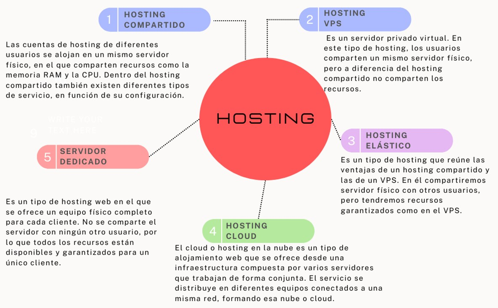

hosting es un servicio de alojamiento para sitios web. En lugar de alojar personas, el hosting web aloja los contenidos de tu web y tu correo electrónico para que puedan ser visitados en todo momento desde cualquier dispositivo conectado a Internet. Cuando quieres consultar un archivo en tu ordenador, ese contenido está almacenado en algún sitio, puede ser en el disco duro de tu equipo o un dispositivo de almacenamiento USB, por ejemplo. Lo mismo sucede con el contenido de las webs, debe estar almacenado en algún sitio y para que pueda ser visitado a través de Internet tendrá que estar almacenado en un servidor web. Un servidor es un equipo informático mucho más potente que un ordenador convencional, conectado a Internet las 24 horas para que los contenidos que almacena puedan ser visitados en cualquier momento. El servidor es el equipo físico, el hardware, y desde él se ofrecen diferentes tipos de hosting web: hosting compartido, VPS, cloud, hosting WordPress, hosting elástico, etc.
Una vez, que el usuario elige el hosting que mejor se adapta a sus necesidades para alojar la página web. Se indica el dominio con el cual los diferentes visitantes pueden acceder a tus contenidos. Le dicen al navegador que mostrar. El navegador irá a buscar los contenidos del sitio web al hosting donde está alojado para mostrarlos, pero ¿cómo sabe a qué alojamiento web tiene que ir a buscarlos? En este punto es donde entran en juego las DNS (también llamados Nameservers). Los diferentes equipos conectados a Internet no se localizan unos a otros mediante nombres, sino que utilizan unos códigos numéricos llamados IPs para comunicarse. Entonces se crea el sistema de nombres de dominio, para facilitar esta tarea y que podamos usar nombres (más fáciles de recordar) en lugar de IPs para navegar por Internet. Cada dominio puede traducirse a una IP que será la del servidor en el que está alojado su contenido y sus cuentas de correo. Los DNS son los encargados de hacer posible esa traducción.

| TIPOS: | HOSTING COMPARTIDOS | HOSTING PRIVADO, VIRTUAL VPS | SERVIDOR DEDICADO | HOSTING EN LA WEB (CLUD HOSTING) |
|---|---|---|---|---|
| VENTAJAS | Es mas economico en el mercado y facil de manejar. | Posee una mayor flexibilidad y acceso al hosting compartido. | El rendimiento no se ve afectado por el trafico. | Es mas eficiente que el hosting dedicado. |
| DESVENTAJAS | Si hay un problema en alguno de los proyecto alojados, afecta al resto. | Solo dispone de una parte de los recursos totales de un servidor. | Puede resultar bastante caro. | Para gestionarlo requiere conocimientos avanzados. |
| RECOMENDACIONES | Son usados generalmente para proyectos que tienen necesidad especiales de almecenamiento. | Para proyecto con necesidades especificas y con mayor recursos del servidor. | Es para proyecto de gran envergadura. | Para proyectos como aplicaciones SAAS (Software como servicios. |
HOSTING WEB QUE PRESTAN SERVICIOS
- Hosting WordPress
- Hosting WooCommerce
- Hosting Divi
- Hosting Web
- Hosting Joomla
- Hosting Elástico
- Hosting Mautic
- Hosting Reseller
- Comprar Hosting
- Hosting Profesional
- Hosting Barato
HOSTINGS MAS CONOCIDOS
| HOSTINGS | CARACTERISITICAS |
|---|---|
| LucusHost | 1Gb de almacenamiento. 5Gb de transferencia mensual. cPanel. Compatible con PHP y MySQL. |
| GitHub | Limita el tamaño de los archivos permitidos en los repositorios. GitHub advierte si se añade o actualiza un archivo mayor a 50mb. |
| 5gbFree | 20Gb de transferencia cada mes, posibilidad de instalar 3 páginas web y que puedes instalar casi cualquier CMS. |
| Awardspace | 1Gb de almacenamiento en SSD. 5gb de tráfico mensual. Servicio técnico 24/7 en inglés. Posibilidad de instalar WordPress o Joomla. Una herramienta para hacer tu propio sitio |
| 000Webhost | 10Gb de tráfico al mes. 1Gb de almacenamiento. Auto instalador de CMS (WordPress, Joomla, etc.). cPanel para administrar tu hosting. Sin anuncios. |
LINK RECOMENDADOS...